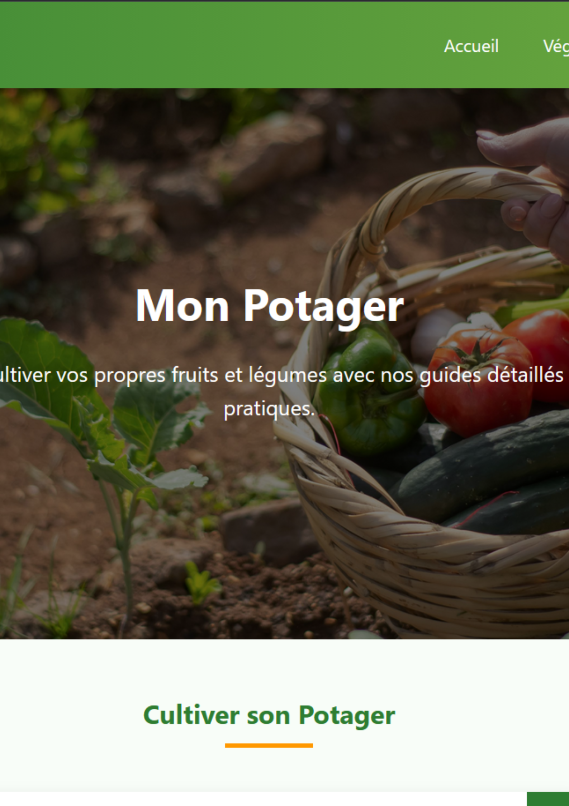
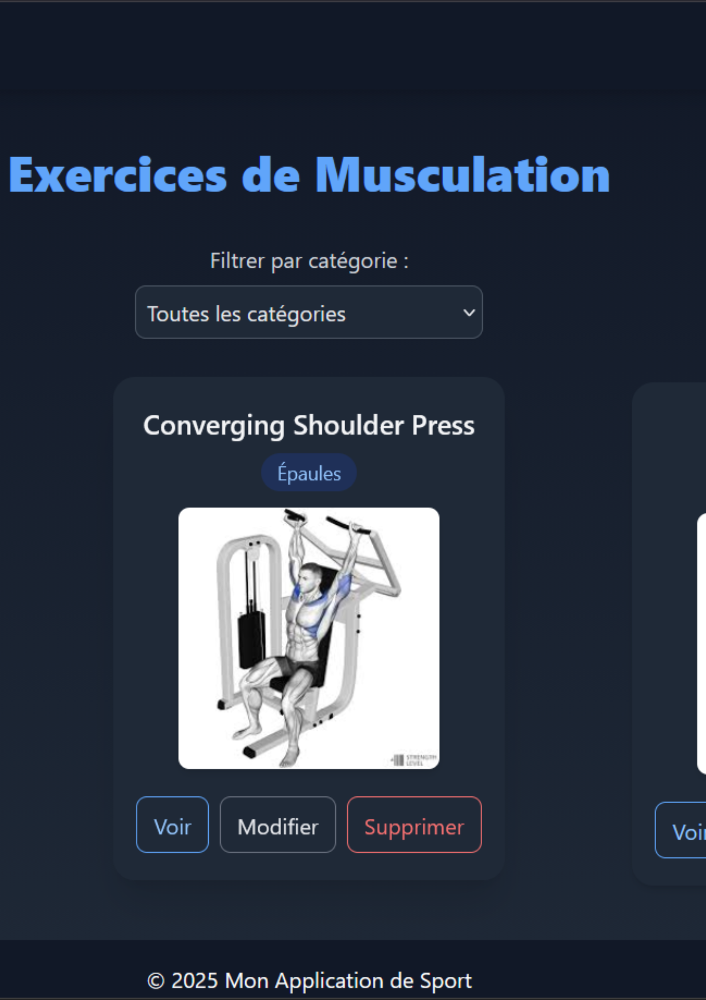

Projets

Projet Potager Virtuel
Un site web interactif permettant aux utilisateurs de rechercher les plantes qu'ils souhaitent et d'obtenir des informations détaillées à leur sujet. Il inclut une section de conseils et un potager virtuel. Projet de BTS SIO 2ieme année.

Sportom
Un site web développé en Laravel qui permet aux utilisateurs de découvrir de nombreux exercices de musculation, d’en créer eux-mêmes et de les ajouter à leurs favoris.

LaraMo
Un site web de conseils et astuces pour Laravel, avec une documentation personnalisée pour développer de meilleures applications et sites web avec Laravel.